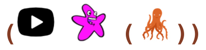
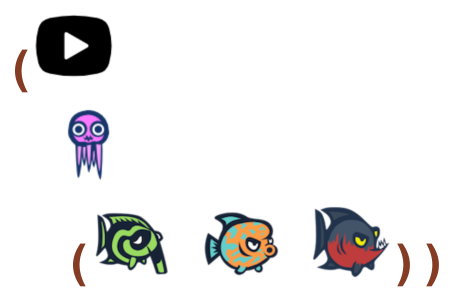
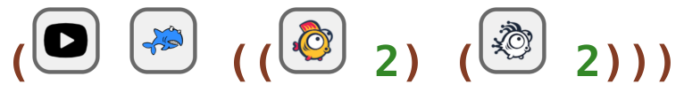
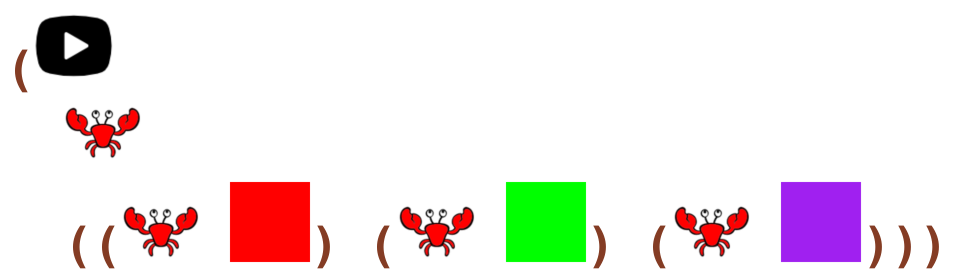
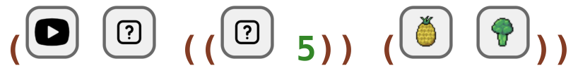
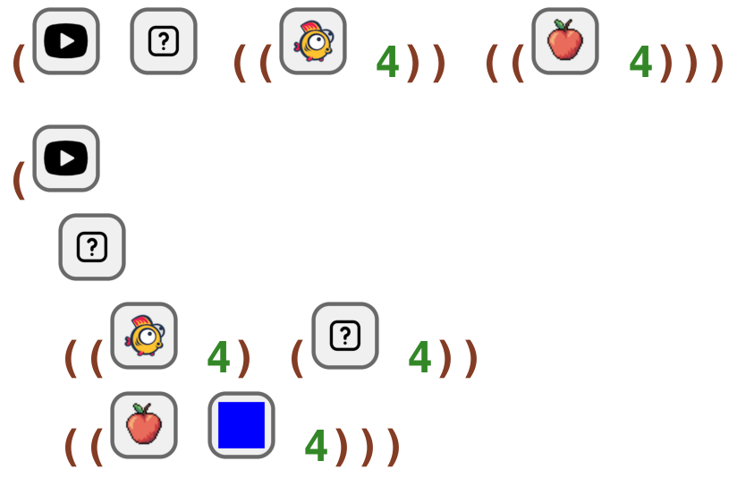

5 Friend Katas
5.1 Sea Kata
Tip: The code you write depends on the #lang. In this case the second parameter is friends. In the last #lang it was coins.
read
Code a game with a starfish healing an octopus.
code
#lang k2/lang/sea/friends (start starfish (octopus))
In Ratchet:

5.2 Sea Kata
read
Code a game with a jellyfish healing a green fish, an orange fish, and a red fish.
code
#lang k2/lang/sea/friends (start jellyfish (green-fish orange-fish red-fish))
In Ratchet:

5.3 Sea Kata
read
Code a game with a shark healing 2 yellow fish and 2 ghost fish.
code
#lang k2/lang/sea/friends (start shark ((yellow-fish 2) (ghost-fish 2)))
In Ratchet:

5.4 Sea Kata
read
Code a game with a crab healing a RED crab, a GREEN crab, and a PURPLE crab.
code
#lang k2/lang/sea/friends (start crab ((crab red) (crab green) (crab purple)))
In Ratchet:

5.5 Sea Kata
read
Code a game with an animal healing 5 friends and eating pineapples and broccoli.
code
#lang k2/lang/sea/friends (start rand ((rand 5)) (pineapple broccoli))
In Ratchet:

5.6 Sea Kata
read
Write a collection of games. The 1st game has an avatar healing 4 yellow fish and eating 4 apples.
The 2nd game has an avatar healing 4 yellow fish and 4 more friends, and eating 4 BLUE apples. Close one game to continue with the next.
code
#lang k2/lang/sea/friends (start rand ((yellow-fish 4)) ((apple 4))) (start rand ((yellow-fish 4) (rand 4)) ((apple blue 4)))
In Ratchet:
